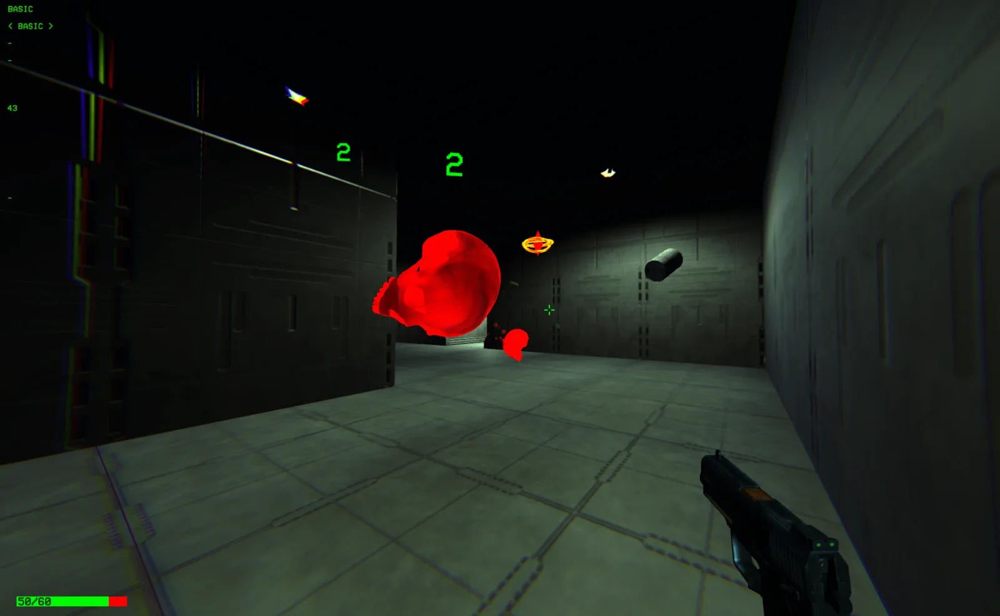
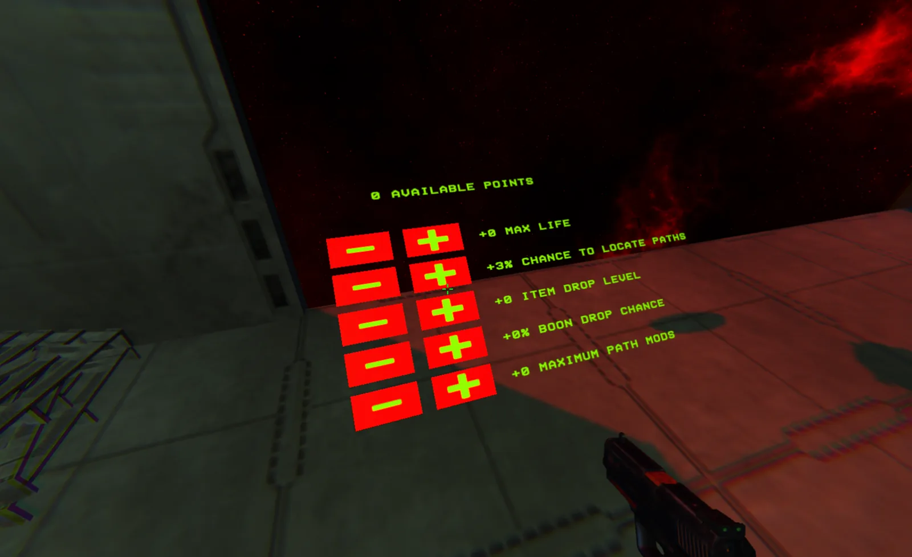
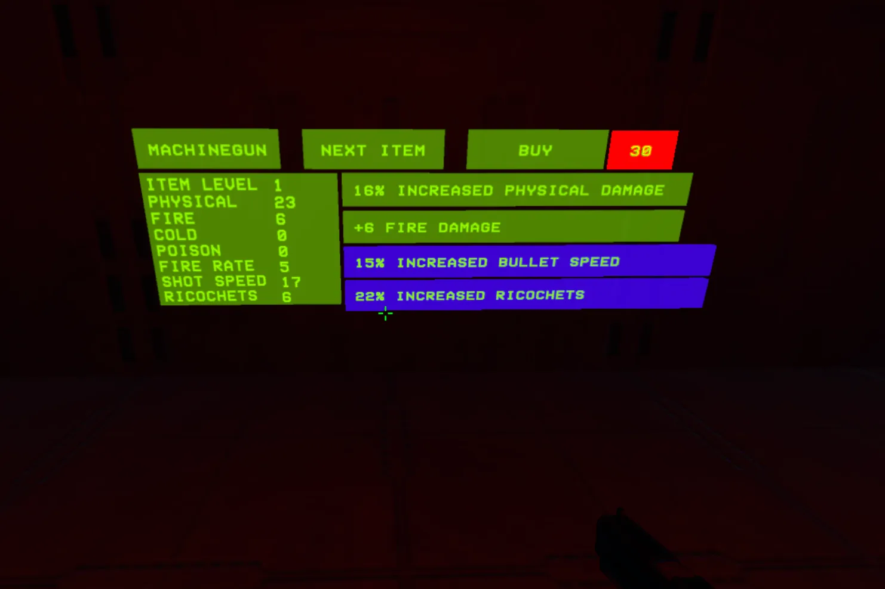
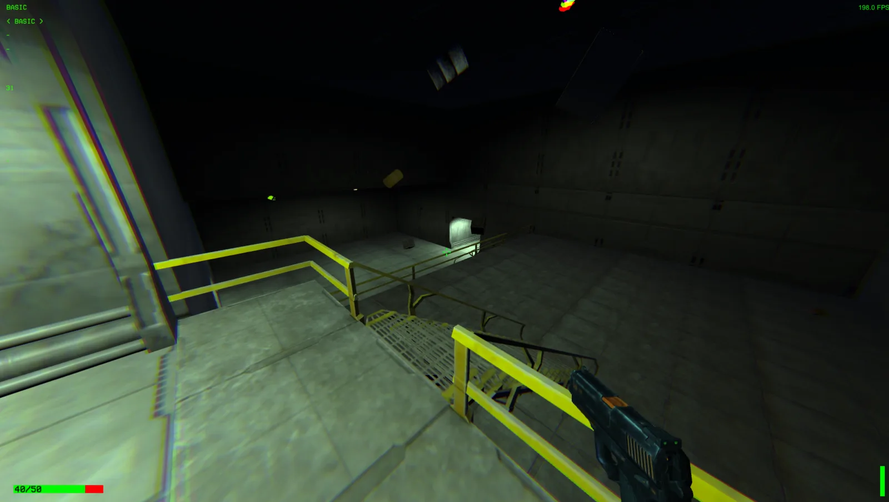

VoidScape
A first-person roguelike where the player writes their own difficulty and the game pays out in proportion. Boons die with the run. The guns you built and the skill tree stay.
Choosing a run: every modifier on a mission raises the payout.
The problem
Every roguelike I played broke the same way: the god run. The drops line up, damage goes exponential, and the game stops asking anything of you just when it should ask the most.
Stat scaling causes it, and tuning only moves where the break happens.
Two answers
The classic answer is to let the player pick a harder run, and VoidScape has it: a board of rolled missions where every modifier raises the payout.
The new answer is the special run. After a run you can go deeper, onto a path that scales on execution instead of numbers. It is the only place skill points come from.
- BoardPick a mission. More modifiers, more payout.
- RoomsClimb and fight. Boons stack as you go.
- BossAlways the last room.
- DeeperOptional. Tests execution, pays one skill point.
- BenchTurn gun parts into guns that stay.
The board
Each monitor rolls a mission: a set of modifiers and the payout they earn. Some hurt, like a damage type made immune. Some help, like extra gun parts per kill.
Good or bad, every modifier raises elite chance, special rooms and drop rate, so the choice is how much risk to buy. Four explain nothing: Danger, ERROR, UnknownX and UnknownY. You find out by taking one.
Going deeper
The special run is a path of bridge pieces out in the void, each shifted and tilted at random, some missing. Monsters turn elite as you near the end, and a boss group holds the last piece.
Attempting to go deeper, the only source of skill points.
Each level of depth is longer and harder, and pays one skill point. Points buy the only permanent upgrades, including how many modifiers a mission can carry, so the biggest payouts sit behind the part a lucky build cannot cheese.
Two progressions
Boons last one run and are by far the strongest modifiers in the game. Guns and the skill tree last forever. The two are designed to need each other.

The skill tree: five upgrades, paid only with special runs.
Most boons are flat numbers, so a boon is only as good as the gun that scales it. The long game is keeping a spread of guns, so whatever a run rolls, one of them can use it.
A boon offer: take it, refuse it for 10 health, or pay gun parts to reroll.
Fifty-odd boons, and most of them cost something
The interesting half are trades: lose 20 max health for +10 fire damage, or halve your bullet speed for +50 physical. A boon you take or refuse leaves the pool, so no offer comes twice.
Others change what the gun is. Ricochets home onto poisoned enemies. Enemies killed by cold burst into eight more. One turns your own fire blast into a speed buff, so shooting the floor to travel is a legitimate build.
Weapons are generated, not designed
A gun rolls a base type, a level and a set of modifiers. Four base types, each in physical, fire, cold and poison.
Modifiers come in three grades: damage, handling, and build-defining specials. A grade's weight halves when it lands, then drops to nothing, so a gun carries at most two of each and comes out mixed.

A rolled machinegun in the shop, one rolled mod per row.
The bench
Gun parts drop from enemies and pay for adding mods, removing them, or scrapping a gun. The price climbs with every use, and scrapping pays parts back, so a near miss is still worth something.
The gun built here is the gun the range below fires.
Adding, removing and scrapping mods at the bench.
Four weapon slots and eight saved layouts persist between runs, so building a gun is a decision that outlasts the session.
The map only goes up
Every step of a run climbs: stairs, a corridor, a room, joined doorway to doorway. The last room is always the boss.
Stairs at the bottom, a boss room at the top, and every step between climbs.
Because the path only goes up, the space around a new room is almost always empty, so tiles never designed to sit together chain anyway.

One generated room, with catwalks and drops for the dashes.
Finding your way
Generated rooms look alike, and players got lost. Two rules fix it: up is always forward, and a room is lit white until you clear it, then red.
Every room has versions
Every room carries optional pieces that each roll their own chance to exist, so the same room comes back different.
The trapped versions matter most: sweeping lasers, spikes, rising lava. Movement is the best defence, so a trap makes you plan it instead of spending it: a harder fight without a single stronger enemy.
Mid-fight in a generated corridor.
Feel: movement
Movement is snappy and forgiving, and the work is in small things: coyote time, jump buffering, gravity that triples past the apex, an invulnerable side dash.
Feel: shooting and the camera
Bullets are physics bodies that bounce: a sniper round ricochets ten times. Keeping that stable when stats go extreme took longer than any other system.
A sniper round ricochets off all four walls; fire bursts on every bounce, and a headshot crits.
What it cost
Fifty interacting boons on rolled weapons and rolled missions cannot be tested by hand. Most of the work was making mechanics compose, and accepting that some states I never anticipated are why the game is worth playing.
This was my first project, and I wrote it without AI tools.
Where it stands
Playable through two bosses. Every generator is in place, so what is missing is content, not architecture: a new modifier is a table row, a new room is a prefab.
Download the prototype on itch.io
One full run on a short mission, from the hub out and back, uncut.